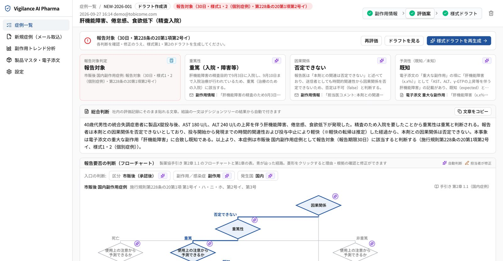
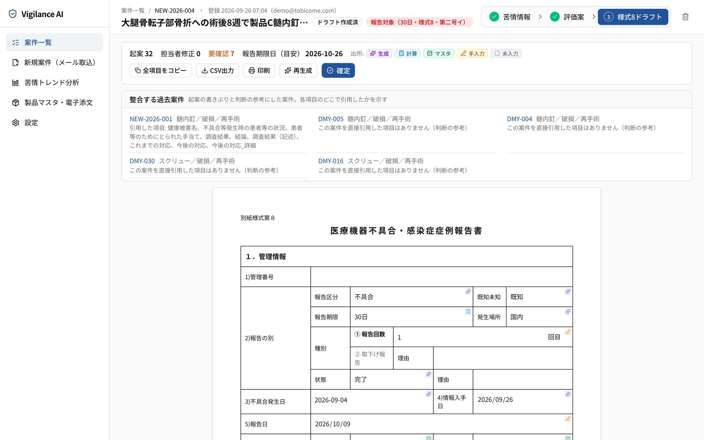
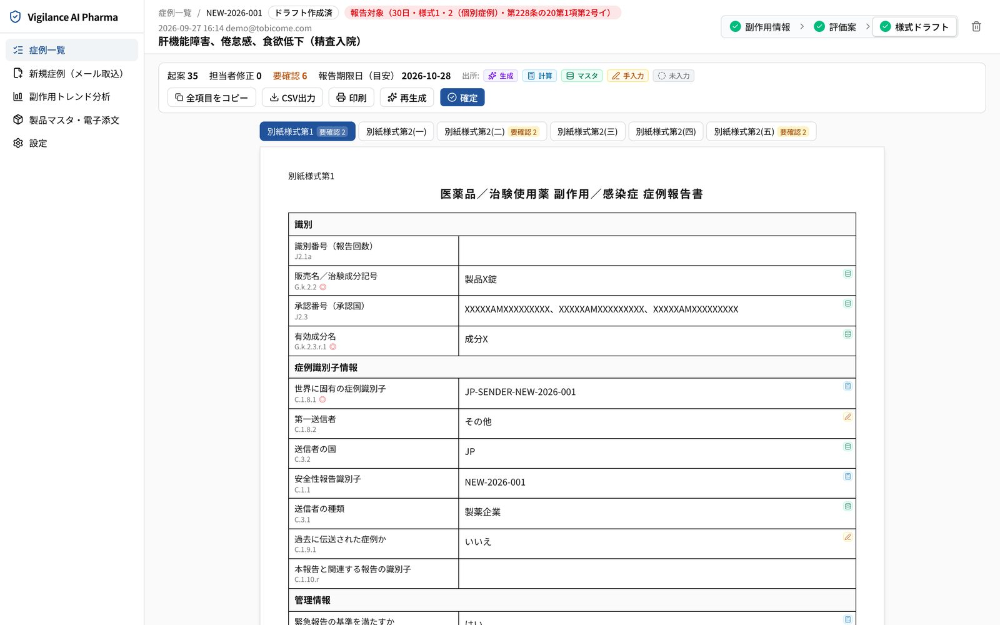

画面イメージ
Screens
根拠を見ながら、その場で確定できる
いずれもデモ環境のため、販売名・承認番号などは架空の値に置き換えています。




トップ ／ Vigilance AI
副作用・不具合情報の取込から、報告要否の評価案、様式ドラフト、トレンド分析までを一気通貫で支援。属人的な「検索・判断・記述」を、根拠つきで標準化します。
Delight Ventures「Venture Builder」採択（2026年）／ Generative AI Conference TOKYO 2026 Idea Pitch 登壇
市場環境
報告件数は増え続け、人員増では追いつかない
医療機器の不具合等報告は5年で約2.5倍に増加し、医薬品の副作用等報告は年間約77万件と規模が大きい。市販後・治験の双方で評価と報告の負荷が発生しており、1件あたりの工数削減が不可欠です。
出典：独立行政法人医薬品医療機器総合機構（PMDA）「令和7事業年度業務実績【概要】」ほかより当社作成。
業務課題
負荷は「報告要否の評価」と「報告書作成」に集中している
社内トレーニングや外部委託を講じても劇的な工数削減には至っておらず、担当者の推論や力量に依存した属人的な業務になっています。
根本原因
対象案件と整合する過去事例や判断根拠を、必要な情報とひもづけて参照・評価できる仕組みがない。評価観点や記載表現が担当者ごとに異なり、責任者との感覚のずれが手戻り（約2割）を生んでいます。
| 直接要因 | Vigilance AI の打ち手 |
|---|---|
| 類似事例の検索・当て方が属人的 | 類似事例の自動検索：近い過去案件を根拠付きで提示 |
| 評価観点・記載表現が担当者ごとに異なる | 4観点と判定理由の標準提示：誰が使っても同じ観点で評価 |
| 電子添文・過去判断・規制情報が分散 | 添文・過去案件の一元取込：根拠を併記し、転記も自動化 |
| 初期情報の質が低く、事実確認に時間がかかる | 追加確認事項の提示：不足情報と確認すべき点を明示 |
出典：当社ヒアリングに基づき作成
主要機能
4つの画面で、取込からドラフト出力までを一気通貫で支援
医療機器版（別紙様式第8）と医薬品版（別紙様式第1・第2、E2B(R3) 項目番号付き）に対応。手引書のデシジョンツリー／フローチャートに沿って、報告要否と報告期限（15日／30日）を示します。
電子添文の記載を引用して既知の根拠を示し、原因が特定できない部分は「可能性が考えられる」、不明な事項は「不明」と記載します。原文に無い推定は「推察」と表示し、担当者の確認を経なければ評価に進めません。
画面イメージ
根拠を見ながら、その場で確定できる
いずれもデモ環境のため、販売名・承認番号などは架空の値に置き換えています。



導入効果
報告1件あたりの作業時間を、最大約4時間から約1時間へ（目標値）
生産性向上だけでなく、GVP準拠や説明可能性の担保、手戻り・判断漏れの防止といった導入価値を提供します。
既存の打ち手との比較
「根本解決」と「導入の現実性」を両立する選択肢
既存の対応策は標準化・可視化とコスト・スピードの間でトレードオフを抱えています。本サービスは日本の報告実務に適合しつつ両者を両立することを設計目標とし、PoC で実効性を検証します。
| 選択肢 | 評価・起案の標準化 | 判断根拠の見える化 | 日本の報告実務への適合 | 導入の速さ | 費用の抑制 | コメント |
|---|---|---|---|---|---|---|
| 手作業＋社内研修 | 低 | 低 | 高 | 高 | 中 | ベテランへの依存が続く |
| Excel・共有フォルダでの事例管理 | 低 | 中 | 高 | 高 | 高 | 検索と当てはめは人手のまま |
| 外部委託（BPO） | 中 | 低 | 高 | 中 | 低 | 成果物の社内再修正が残る |
| 大規模な安全性DB／個別AI開発 | 高 | 中 | 中 | 低 | 低 | 大規模投資・長期間が前提 |
| Vigilance AI（設計上の目標） | 高 | 高 | 高 | 高 | 高 | PoC で検証 |
導入の進め方
最初の2ステップは、貴社の情報提供や契約手続きなしで進められます
導入は4段階で進め、貴社のご負担とリスクを最小化します。
貴社製品に近い模擬案件で、評価案・ドラフトをその場で確認。
30分／情報・契約は不要対象製品・評価指標・データの取扱いを決定。
1時間 × 1〜2回1製品の過去案件を取り込み、実業務と並行運用して効果を測定。
合計10〜20時間／秘密保持契約運用開始、対象製品の拡大。
ご利用契約貴社の情報提供や契約手続きは不要です。貴社製品に近い模擬案件で、評価案と様式ドラフトをその場でご確認いただけます。
フォームは Microsoft Forms を利用しています